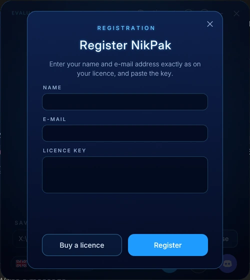

उपयोगकर्ता गाइड
NikPak इंस्टॉल करें, ड्रॉप करके कंप्रेस करें, unNik से आर्काइव ब्राउज़ करें, लाइसेंस रजिस्टर करें और सब कुछ कमांड लाइन से चलाएँ।
इंस्टॉल करें
सेटअप चलाएँ। डिफ़ॉल्ट रूप से यह केवल मौजूदा उपयोगकर्ता के लिए, बिना एडमिनिस्ट्रेटर अधिकारों के, %LOCALAPPDATA%\Programs\NikPak में इंस्टॉल करता है; इसका पहला पेज सभी उपयोगकर्ताओं के लिए इंस्टॉल करने का विकल्प भी देता है। यह NikPak और unNik इंस्टॉल करता है, उन्हें स्टार्ट मेनू में जोड़ता है, NikPak को डेस्कटॉप पर रखता है और unNik को .nik फ़ाइलों का प्रोग्राम बनाता है। माँगने पर यह कमांड लाइन के लिए फ़ोल्डर को PATH में जोड़ता है।
अपडेट पिछले संस्करण के ऊपर इंस्टॉल होते हैं और आपका लाइसेंस बनाए रखते हैं।
macOS और Linux: आर्काइव को अनपैक करें और ./install.sh चलाएँ। यह nikpak और unNik को ~/.local/bin (Linux) या /usr/local/bin (macOS) में कॉपी करता है और फ़ाइल मैनेजर का राइट-क्लिक मेनू जोड़ता है (Dolphin, Nemo, Nautilus; Finder में Quick Actions)। फिर nikpak से विंडो खोलें।
Windows
macOS
Linux / Unix
NikPak विंडो से कंप्रेस करें
- NikPak शुरू करें। फ़ाइलें या फ़ोल्डर विंडो पर छोड़ें, या गोले पर क्लिक करके फ़ाइलें चुनें या फ़ोल्डर चुनें चुनें।
- वे सबसे अच्छे कंप्रेशन (-m5) के साथ एक आर्काइव में कंप्रेस होते हैं, जिसका नाम फ़ाइल, फ़ोल्डर या उनके मूल फ़ोल्डर पर होता है। मौजूदा आर्काइव कभी ओवरराइट नहीं होता: report.nik बन जाता है report (2).nik।
- रिंग प्रतिशत, चरण (विश्लेषण, कंप्रेशन, समापन), प्रोसेस की गई मात्रा और समय दिखाती है। रद्द करें या Esc तुरंत रोकता है और अधूरा आर्काइव हटा देता है।
- जब रिंग हरी हो जाए: फ़ोल्डर में दिखाएँ, unNik में खोलें या और कंप्रेस करें।


विंडो में और भी
- यहाँ सेव करें: नीचे गंतव्य फ़ोल्डर। यह याद रखा जाता है; पहली बार यह डेस्कटॉप होता है। इसके पास का फ़ोल्डर बटन इसे खोलता है।
- unNik पर जाएँ: i बटन के बाईं ओर का गोल बटन NikPak बंद करके unNik खोलता है, और अगर आपने अभी आर्काइव बनाया है तो उसे भी।
- भाषा: नीचे बाईं ओर का बटन। NikPak और unNik चुनी गई भाषा में फिर से शुरू होते हैं और उसे साझा करते हैं।
- ध्वनियाँ: टाइटल बार का स्पीकर बटन साउंड इफ़ेक्ट चालू और बंद करता है।
- स्किन: टाइटल बार का पैलेट बटन विंडो के बगल में स्किन मेनू खोलता है (आज़माने के लिए क्लिक करें, रखने के लिए स्किन लागू करें, लौटने के लिए रद्द करें); सूरज / चाँद बटन गहरे और हल्के रंगों के बीच बदलता है। चुनाव याद रहता है और unNik के साथ साझा होता है। सभी स्किन।
- स्थिति और परिचय: ऊपर बाईं ओर मूल्यांकन संस्करण · रजिस्टर करें या लाइसेंस धारक दिखता है; i बटन संस्करण और लाइसेंस दिखाता है।
स्किन
NikPak और unNik 89 स्किन साझा करते हैं। मेनू प्रोग्राम के बगल में खुलता है, ताकि जिस स्किन को आप आज़मा रहे हैं उसमें पूरा इंटरफ़ेस दिखे।
- टाइटल बार का पैलेट बटन क्लिक करें। विंडो चौड़ी हो जाती है और स्किन का डिब्बा दाईं ओर, प्रोग्राम के बाहर दिखता है।
- किसी स्किन पर क्लिक करें: पूरी विंडो तुरंत उसके रंग और पृष्ठभूमि ले लेती है।
- डिब्बे को उसकी टाइटल बार से कहीं और खींचें, या पीछे के इंटरफ़ेस से तुलना करें।
- रखने के लिए स्किन लागू करें क्लिक करें, या पिछली स्किन पर लौटने के लिए रद्द करें (Esc या ×)।


unNik से ब्राउज़ और एक्सट्रैक्ट करें
.nik फ़ाइल पर डबल-क्लिक करें, उसे unNik की विंडो पर छोड़ें या हाल के आर्काइव में से कोई चुनें। एन्क्रिप्टेड आर्काइव पहले पासवर्ड माँगते हैं। विंडो एक ब्राउज़र बन जाती है जिसमें फ़ोल्डर ट्री, फ़ाइलें और चुनी गई फ़ाइल का विवरण होता है।

- फ़ोल्डर ट्री, पाथ नेविगेशन, पीछे, आगे और ऊपर बटन और डबल-क्लिक से नेविगेट करें। खोज पूरे आर्काइव में नाम से फ़ाइलें ढूँढती है।
- क्लिक, Ctrl+क्लिक, Shift+क्लिक या चेक बॉक्स से चुनें। क्रम बदलने के लिए कॉलम शीर्षक पर क्लिक करें। राइट-क्लिक सभी कार्यों वाला मेनू खोलता है।
- सब निकालें या चुनी हुई फ़ाइलें: गंतव्य चुनें, फ़ोल्डर रखें या नहीं, और फ़ाइल मौजूद होने पर क्या करना है: बदलें, दोनों रखें या छोड़ दें।
- लाइन नंबर और खोज के साथ टेक्स्ट देखें, या बाइनरी फ़ाइलें हेक्साडेसिमल में। खोलें फ़ाइल को उसके अपने प्रोग्राम में शुरू करता है।
- हटाएँ पुष्टि के बाद आर्काइव से फ़ाइलें निकाल देता है; आर्काइव सुरक्षित रूप से फिर से लिखा जाता है। जाँचें हर फ़ाइल की जाँच करता है।
कीबोर्ड शॉर्टकट
| कुंजियाँ | कार्य |
|---|---|
| Ctrl + F | पूरे आर्काइव में खोजें |
| Ctrl + E | चुनी हुई फ़ाइलें निकालें (कुछ न चुना हो तो सब) |
| F3 | फ़ाइल देखें |
| Del | आर्काइव से हटाएँ |
| Ctrl + A | सब चुनें |
| Alt + Left / Alt + Right | पीछे / आगे |
| Backspace | एक फ़ोल्डर ऊपर |
अपना लाइसेंस रजिस्टर करें
- लाइसेंस खरीदें। आपको ईमेल से एक कुंजी मिलती है जो
NPK1-से शुरू होती है। - NikPak में ऊपर बाईं ओर मूल्यांकन संस्करण · रजिस्टर करें पर, या रिमाइंडर में रजिस्टर करें पर क्लिक करें।
- नाम और ईमेल पता ठीक वैसे ही दर्ज करें जैसे आपके लाइसेंस पर है, और कुंजी पेस्ट करें। बड़े-छोटे अक्षर, अतिरिक्त स्पेस और मिलते-जुलते अक्षर O/0 और I/L/1 से कोई फ़र्क़ नहीं पड़ता।


रजिस्टर होने के बाद NikPak उस कंप्यूटर पर फिर कभी नहीं पूछता। कोई कंपनी nikpak.exe के पास nikpak.key फ़ाइल भी रख सकती है, जिससे उस पीसी का हर उपयोगकर्ता रजिस्टर हो जाता है। कमांड लाइन से:
nikpak register "Jane Doe" jane@example.com NPK1-... nikpak license nikpak unregister
कमांड लाइन
NikPak वही सिंटैक्स अपनाता है जो RAR उपयोगकर्ता जानते हैं: nikpak <कमांड> [विकल्प] <आर्काइव> [फ़ाइलें...]। विकल्प आर्काइव के नाम से पहले या बाद में आ सकते हैं; -- विकल्पों को समाप्त करता है।
कमांड
| कमांड | अर्थ |
|---|---|
a | आर्काइव बनाएँ। नाम में एक्सटेंशन न हो तो .nik जोड़ा जाता है। फ़ोल्डर हमेशा अपनी सामग्री के साथ शामिल होते हैं। |
x | पूरे पाथ के साथ एक्सट्रैक्ट करें: सब कुछ, या केवल दिए गए नाम, फ़ोल्डर और वाइल्डकार्ड। |
e | बिना पाथ के एक्सट्रैक्ट करें: हर फ़ाइल सीधे गंतव्य फ़ोल्डर में जाती है। |
l | सामग्री की सूची: एट्रिब्यूट, आकार, तारीख, नाम और कुल योग। |
v | विस्तृत सूची: हर फ़ाइल का CRC32 भी जोड़ती है। |
lb | सादी सूची: हर पंक्ति में एक नाम, स्क्रिप्ट और फ़्रंट-एंड के लिए। |
t | जाँच: सब कुछ डीकंप्रेस करके हर CRC32 और, एन्क्रिप्टेड होने पर, ऑथेंटिकेशन जाँचें। |
p | फ़ाइलों को स्टैंडर्ड आउटपुट पर प्रिंट करें। |
d | आर्काइव से फ़ाइलें या फ़ोल्डर हटाएँ। एन्क्रिप्टेड आर्काइव अपना पासवर्ड बनाए रखते हैं। |
mt | मीडिया टेस्ट: दिखाता है कि हर मीडिया फ़िल्टर कितना आकार हासिल करता है। कुछ नहीं लिखता। |
register | लाइसेंस रजिस्टर करें: nikpak register "नाम" ईमेल कुंजी। साथ ही license और unregister। |
मुख्य विकल्प
| RAR शैली | zip शैली | अर्थ |
|---|---|---|
-p | -e | एन्क्रिप्ट या डिक्रिप्ट करें और पासवर्ड पूछें। खाली प्रविष्टि एक रैंडम पासवर्ड बनाती है। |
-p<password> | -P <password> | कमांड लाइन पर पासवर्ड (मशीन के अन्य उपयोगकर्ताओं को दिखता है)। |
-hp[password] | -p जैसा ही; NikPak में फ़ाइल नाम हमेशा एन्क्रिप्ट रहते हैं। | |
-r | उपफ़ोल्डरों में पुनरावृत्ति (हमेशा चालू; संगतता के लिए स्वीकृत)। | |
-m0 … -m5 | -0 … -9 | कंप्रेशन स्तर: स्टोर, सबसे तेज़, तेज़, अच्छा, उच्च, अधिकतम (डिफ़ॉल्ट)। |
-mt<N> | थ्रेड की संख्या, 1 से 256 (डिफ़ॉल्ट: सभी कोर)। | |
-mc- / -mc+ | सभी कंटेंट फ़िल्टर बंद / मीडिया फ़िल्टर हमेशा चालू। डिफ़ॉल्ट: हर फ़ाइल पर स्वचालित ट्रायल। | |
-ep | -j | केवल फ़ाइल का नाम रखें, पाथ के बिना। |
-ep1 | बेस फ़ोल्डर का नाम न रखें। | |
-o+ | -o | मौजूदा फ़ाइलों को बिना पूछे ओवरराइट करें। |
-o- | -n | मौजूदा फ़ाइलों को बिना पूछे छोड़ दें। |
-or | पहले से मौजूद एक्सट्रैक्ट की गई फ़ाइलों का नाम बदलें: name (1).ext। | |
-y | हर सवाल का जवाब हाँ दें। | |
-x<pattern> | -x <pattern> | फ़ाइलें बाहर रखें; दोहराया जा सकता है। |
-d <dir> | -d <dir> | x और e के लिए गंतव्य फ़ोल्डर। |
-inul -idq | -q | शांत: केवल त्रुटियाँ दिखाई जाती हैं। |
@listfile | टेक्स्ट फ़ाइल से फ़ाइलों के नाम पढ़ें, हर पंक्ति में एक। | |
-h -help -? | पूरी सहायता। -V संस्करण दिखाता है। |
उदाहरण
nikpak a backup.nik C:\Docs\*.txt Photos\ # आर्काइव बनाएँ nikpak a -m5 -mt8 big.nik Projects\ # अधिकतम स्तर, 8 थ्रेड nikpak a -p secret.nik Taxes2026\ # एन्क्रिप्टेड, पासवर्ड पूछता है nikpak x backup.nik C:\Restore\ # पाथ के साथ एक्सट्रैक्ट करें nikpak e backup.nik *.jpg C:\Pics\ # केवल *.jpg, बिना पाथ nikpak x backup.nik Docs/report.pdf # एक फ़ाइल एक्सट्रैक्ट करें nikpak l backup.nik *.pdf # केवल PDF की सूची nikpak t secret.nik # जाँच (पासवर्ड पूछता है) nikpak d backup.nik Temp *.bak # एंट्री हटाएँ nikpak mt song.wav tracker.mod photo.bmp # कौन-सा मीडिया फ़िल्टर जीतता है?
पासवर्ड
जब -p के साथ आर्काइव बनाया जाता है, तो NikPak पासवर्ड इस क्रम में लेता है:
- कमांड लाइन पर
-p<password>या-P <password>(कम से कम 8 अक्षर); - एनवायरनमेंट वेरिएबल
NIKPAK_PASSWORD, जो इसे प्रोसेस सूची से बाहर रखता है; - इंटरैक्टिव प्रॉम्प्ट, दो बार पूछा जाता है; खाली प्रविष्टि एक रैंडम पासवर्ड बनाती है;
- टर्मिनल न हो तो स्टैंडर्ड इनपुट पर भेजा गया पासवर्ड, वरना एक बनाया गया पासवर्ड।
एग्ज़िट कोड
| कोड | अर्थ | आम कारण |
|---|---|---|
| 0 | सफल | |
| 1 | चेतावनी | कुछ फ़ाइलें छोड़ी गईं (पढ़ी नहीं जा सकीं, असुरक्षित पाथ, सिंबॉलिक लिंक) |
| 2 | गंभीर त्रुटि | फ़ाइल बनाई या पढ़ी नहीं जा सकी |
| 3 | दूषित आर्काइव या CRC त्रुटि | क्षतिग्रस्त या अधूरा आर्काइव |
| 7 | कमांड-लाइन त्रुटि | अज्ञात विकल्प, आर्काइव का नाम नहीं दिया |
| 10 | कुछ मेल नहीं खाया | कोई फ़ाइल नामों या वाइल्डकार्ड से मेल नहीं खाई |
| 11 | गलत या अनुपस्थित पासवर्ड | गलत पासवर्ड, या छेड़छाड़ किया गया एन्क्रिप्टेड आर्काइव |
Total Commander और अन्य फ़्रंट-एंड
क्योंकि NikPak RAR का कमांड सिंटैक्स स्वीकार करता है, जो प्रोग्राम बाहरी rar.exe चला सकता है, वह nikpak.exe भी चला सकता है। Total Commander में nik एक्सटेंशन को अतिरिक्त पैकर के रूप में रजिस्टर करें और पैकर व अनपैकर कमांड को nikpak.exe की ओर इंगित करें। बिना निगरानी एक्सट्रैक्शन के लिए -o+ या -y का उपयोग करें। RAR फ़्रंट-एंड अक्सर जो विकल्प भेजते हैं (-s, -ma5, -md64m, -ibck, -rr आदि), वे स्वीकार करके अनदेखे कर दिए जाते हैं।
-d "C:\My Folder" का उपयोग करें।और आगे
पूर्ण तकनीकी गाइड — आर्किटेक्चर, .nik फ़ॉर्मेट, NAC कोडेक, एन्क्रिप्शन डिज़ाइन और सभी बेंचमार्क — इस पेज पर है। सवाल? हमें लिखें।